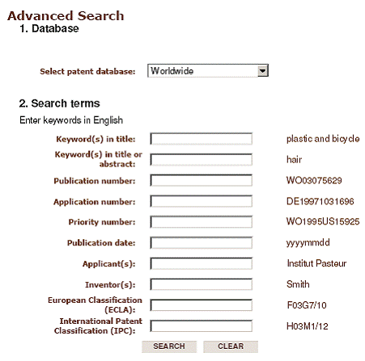
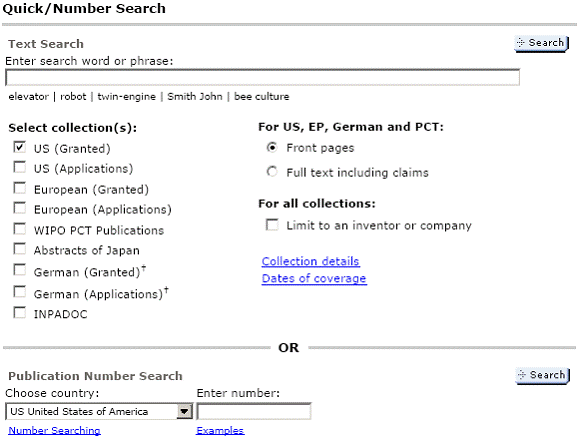

|
Fatih Yalýnbaþ
Patent Bölüm Yöneticisi
Destek Patent A.Þ.
Eylül 2007, Bursa
Bilindiði gibi patent dökümanlarý buluþ sahibine tanýdýðý hukuki haklarýn yanýnda toplumun ilgili teknik hakkýnda bilgi altyapýsýný artýrmak üzere doðrudan üretime ya da uygulamaya yönelik teknik bilgiler içermektedir. Öyle ki bir buluþa patent verilebilmesi için bütün ülkelerin patent mevzuatlarýnda; buluþun teknikteki bir uzman tarafýndan yeterince anlaþýlabilir hatta okunduktan sonra kolayca uygulanabilir nitelikte bilginin okuyucuya sunulmasý gerektiði yer almaktadýr. Buluþla ilgili yeterli teknik bilgi ya da altyapý ve buluþun uygulamaya yönelik detaylarý sunulmadýðýnda ise patent verilmemektedir.
Patent dökümanlarýný teknik ve pratik bilginin yoðunlaþtýðý bir hazine olarak deðerlendirirsek hiçte hatalý bir yaklaþým yapmýþ olmayýz. Buna göre ülkemizde patent sayýlarýmýzýn artmasý -ki bu buluþ sayýmýzýn doðrudan göstergesidir - Ar-Ge birimlerimizin ya da buluþçularýmýzýn herhangi bir teknik problemle uðraþmaya baþlamadan önce baþvurmalarý gereken yegane kaynaklardan biri patent dökümanlarýdýr.
Patent dökümanlarýnýn bir buluþ ya da Ar-Ge faaliyeti öncesi irdelenmesinin daha doðrusu araþtýrýlmasýnýn ve incelenmesinin çeþitli yararlarý aþaðýda toparlanmaya çalýþýlmýþtýr.
- Daha önce ilgili teknik probleme baþkalarýnýn nasýl yaklaþtýðýný, çözdüðünü ya da çözmeye çalýþtýðýný görebiliriz (so called: do not invent the wheel again).
- Ýlgili teknikte günümüze kadar gerçekleþen teknolojik ilerlemenin analizi yapýlabilir. Böylece özellikle hangi yýllarda bu alanda uðraþý ve yatýrým sarf edilmiþ, bugün bu alanda çalýþmak bize ne kazandýrýr ön görülebilir (yani ar-ge yatýrýmlarýmýzla atacaðýmýz taþýn ürküteceði kurba oranýný analiz edebiliriz).
- Ürünü piyasaya sürmeden önce kendimize patent risk haritasý çýkarabiliriz. Böylece söz konusu ürünü ortaya koyarken baþkalarý tarafýndan alýnmýþ patentlere ayaðýmýzýn takýlmamasý için tedbir almýþ oluruz.
- Ýlgili teknik alanda baþka kimlerin çalýþtýðýný uluslar arasý baðlamda görüp, nereden nereye geldiklerini analiz edebiliriz (rakip analizi).
Yukarýda sayýlan bu yararlar en temel olanlarý olup, esasýnda patent araþtýrmasý öncesi ve sonrasýnda özellikle Ar-Ge birimlerimize katký saðlayacak birçok ek avantajlarla karþýlaþýlacaktýr.
"Peki böyle bir araþtýrmayý nereden yapabiliriz?" sorusunu ise olayýn ücret, veritabaný boyutu vb. kriterlere göre çeþitlilik arz ettiðini söyleyerek cevaplamaya baþlayabiliriz. Diðer bölümde özellikle ücretsiz olarak patent araþtýrmasý yapabileceðimiz internet kaynaklarý sizlere tanýtýlacaktýr.
Özellikle ücretsiz patent araþtýrmasý yapýlmasýna olanak tanýyan internet kaynaklarý bu bölümde tanýtýlacaktýr.
Öncelikle patent araþtýrmasý yapmak istediðimiz teknik alana kendi dilimizde ve ülkemizde hakim olabilmek için Türk Patent Enstitüsü nün sunduðu imkanlardan yararlanýlmalýdýr.
http://online.tpe.gov.tr/EPATENT/presearch.jsp
Yukarýdaki linki týkladýðýmýzda karþýmýza çýkacak sorgu ekranýnda aþaðýdaki kriterlere göre araþtýrma yapýlabilmektedir:
Buluþ Baþlýðý / Özet kýsmýnda aramak istenilen konunun genel ismi Türkçe yazýlarak araþtýrmaya baþlanabilir. Ancak þu unutulmamalýdýr ki, genel olarak patent baþvurularý için kullanýlan baþlýklarda geniþ kapsamlý terimler kullanýlmaktadýr. Dolayýsýyla doðrudan anahtar kelime üzerinden hiçbir zaman çok saðlýklý bir araþtýrma sonucuna ulaþýlamaz.
Bülten numarasý ile resmi Türk Patent Bültenlerine Türk Patent Enstitüsünün atamýþ olduðu numaralardan yararlanýlarak araþtýrma yapýlabilmektedir. Bu özellikle ilgili aya ait patent bültenin kaç adet baþvuru yapýldýðýný ya da bu konuda o ayda herhangi bir baþvuru olup olmadýðýný takip etmemize olanak saðlayan bir seçenektir. Aylýk patent takibi yapanlar için ideal bir arama kriteridir.
Baþvuru numarasý ise patent siciline kayýtlý olan ve Türk Patent Enstitüsünce numaralandýrýlan patent ya da faydalý model baþvuru numaralarý kullanýlarak belirli bir baþvuruya ulaþmamýzý saðlar. Bilinen bir baþvuruya ulaþmak ya da görmek için kullanýlýr.
Rüçhan numarasý ise baþvuru numarasý gibi yurtdýþýna çýkan patent baþvurularýný aramamýza yardýmcý olmaktadýr.
Yayýn tarihi çok fazla kullanýlan bir seçenek olmamakla beraber özellikle belirli bir tarihte ilgili teknik konu hakkýnda yapýlan baþvurulara eriþmemizi saðlamaktadýr.
Baþvuru sahibi ise buluþ baþlýðý ya da özet kýstasýnda olduðu gibi çok kullanýlan bir seçenektir. Özellikle bir teknik konuda sektörü tanýyorsak ve hangi firmalarýn bu konuda çalýþtýðý hakkýnda bilgi altyapýmýz varsa onlar üzerinden araþtýrmamýzý baþlatabiliriz.
Buluþ sahibi ise bir teknik alanda ün yapmýþ ve tanýnmýþ kiþiler üzerinden arama yapmamýzý saðlayabilir. Eðer buluþ sahibi biliniyorsa ilgili patentin görüntülenmesi kolayca gerçekleþtirilebilir.
Vekil ise ülkemizde baþvuru sahiplerine vekillik eden gerçek ya da tüzel kiþilikler üzerinden arama yapmamýza olanak tanýmaktadýr.
IPC sýnýfý belki de önceki arama alanlarýndan en önemlisidir. IPC (International Patent Classification) Patentlerin uluslar arasý sýnýflandýrmasý olarak tanýmlanmaktadýr. Bu sýnýflandýrma sisteminde teknoloji 8 bölüme, 21 alt bölüme, 120 sýnýfa, 628 alt sýnýfa ve 69.000'den fazla gruba bölünerek, her birine harf ve rakamlardan oluþan semboller verilmiþtir.
Araþtýrmaya baþlangýç olarak IPC sýnýf kodunu girerek baþlamak zorunlu deðildir. Strateji olarak öncelikle baþlýk veya özet kýsmýna anahtar kelime girerek konumuzla ilgili patentler tespit edilmelidir. Ýlgili olduðu düþünülen patentler üzerinden gidilere daha sonradan konumuzun IPC sýnýfý tespit edilebilir.
Espacenet:
http://tr.espacenet.com ve http://ep.espacenet.com
Bu bölümde de Avrupa Patent Ofisinin (EPO) sunmuþ olduðu ücretsiz bir patent araþtýrma hizmetinden bahsedilecektir. Yukarýdaki linklerden ilki tr ile baþlamaktadýr. Bunun nedeni bu espacenet arayüzünün Türkçe olmasýdýr ve Türkçe kelimelerle Türk patentleri arasýndan araþtýrma yapmaya olanak tanýmasýdýr. Diðer, ep ile baþlayan, direk EPO nun ana araþtýrma portalýnýn adresini vermektedir. EPC nin (Avrupa Patent Sözleþmesi) resmi dilleri olan Ýngilizce, Almanca ve Fransýzca ara yüzlerle araþtýrma yapmak mümkündür.
Öncelikle ülke kodlu espacenet hizmetleri yani bizim için tr ile baþlayan espacenet adresi ülkemiz dahil olmak üzere þimdilik 24 ülke patent ofisinden alýnan patent verileri üzerinden araþtýrma yapmayý olanaklý kýlmaktadýr. Bu özellikle Ýngilizce anahtar kelime yazýlarak araþtýrma yapýlamayan yerel patentlerin araþtýrýlmasýnda oldukça önemlidir. Esasýnda yaptýðýmýz uluslar arasý ya da ulusal patent baþvurularý için düzenlenen resmi patent araþtýrmalarýnda ulusal patent ofislerinin veri tabanlarýnýn çoðunlukla dýþarýda kaldýðýný göstermektedir. Örneðin EPO nun düzenlediði bir araþtýrma raporunda bir Türk baþvurusunun ya da bir Rus baþvurusunun çýktýðý çok nadirdir. Rus Patent Ofisinin yaptýðý araþtýrmada da ayný biçimde genel olarak Rusça ve Ýngilizce patentlerle karþýlaþmaktayýz. Bu da patent baþvurularýnýn saðlamasý gereken dünya çapýnda yenilik kriterinin henüz tam olarak sorgulanamadýðý anlamýna gelmektedir. Ancak bir þey tam olarak yapýlamýyorsa bütünüyle terk edilemeyeceði için Patent Ofisleri mümkün olan en geniþ veri tabanlarýný kullanarak araþtýrmalarýný yapmaktadýrlar.
Þimdi bu iki ara yüzü karþýlaþtýrarak espacenet'i tanýmaya çalýþalým:
Her iki ara yüzün ortak yönü ekranýn sol üst tarafýna doðru konumlandýrýlmýþ genel seçeneklerdir. Bunlar Çabuk Arama (Quick Search), Detaylý Arama (Advanced Search), Numara ile Arama (Number Search), Son Sonuç Listesi (Last Result List), Patent Listem (My Patent List), Sýnýflandýrma Aramasý (Classification Search), Yardým (Get Assistance) dýr.
TR kodlu espacenet ile EP kodlu olan arasýndaki en büyük fark esasýnda yukarýda beyan edilen ulusal patent baþvurularýndan oluþturulmuþ veritabanlarýna eriþim farkýdýr. Bir örnekle açýklamaya çalýþýrsak Çabuk Arama kýsmý týklandýðýnda açýlan ekranda "Patent Veritabanýný Seçiniz" adýnda bir alan karþýmýza çýkacaktýr. EP Espacenet te ise ayný olay Quick Search seçeneði týklanarak yapýlmaktadýr. Orada da "Select Patent Database" seçeneði ile karþý karþýya kalýrýz. EP dekinde yalnýzca Worldwide (Dünya Çapýnda), EP espacenet (Avrupa Patentleri yani EPC baþvurularý), WIPO espacenet (PCT baþvurularý) seçeneklerinden oluþan yalnýzca 3 adet veritabanýna ulaþýlabilmektedir. Worldwide seçeneði tümünün seçilmiþ halidir denebilir. Ülke kodlu espacenet'lerde ise bu üçünün dýþýnda ayrýca TR, AT (Avusturya), BE (Belçika), ., OA (OAPI - Africa Bölgesi) vb. 24 adet ülkeden alýnan patent verileri ile oluþturulan bireysel veritabanlarýna ulaþmak ve o ülkenin resmi dili ile araþtýrma yapmak olanaklýdýr.

Çabuk Arama (Quick Search):
Seçilen veri tabaný üzerinden istediðiniz iki kriterden birini kullanarak hýzlý bir göz atma yapýlabilir. Örneðin adýný bildiðimiz herhangi bir firma ya da buluþ sahibi kiþiler üzerinden ya da buluþ baþlýðý/özet için tahmin ettiðimiz bir anahtar kelimeyi kullanarak hýzlý araþtýrmalar yapabiliriz. Bu kýsýmda tr için Türkçe anahtar kelime girilmesine izin verilmemektedir.
Detaylý Arama (Advanced Search):
Bu kýsýmda odaklý ve detaylý esas patent araþtýrmasýnýn yapýlabilmektedir. Burada toplam on adet arama kriteri girilerek araþtýrma gerçekleþtirilebilir. Bunlara kýsaca göz atalým.
Baþlýkta anahatar kelime(ler) (Keywords in Title):
Buraya yazýlacak anahtar kelime yalnýzca patent baþvurularýnda kullanýlan baþlýklarla kýyaslanacaktýr.
Baþlýk veya özette anahtar kelime(ler) (Keywords in Title or Abstract):
Buraya yazýlacak anahtar kelime yalnýzca patent baþvurularýnda kullanýlan baþlýklarla veya özet bilgileriyle kýyaslanacaktýr.
Önemli Not! Üstteki her iki alan içinde en fazla dört adet anahtar kelime kullanýlabilmektedir. Bunun yanýnda ?, *, # gibi aramada kullanýlan bazý karakterlerde kullanýlabilir. Ancak bunlarýn kullanýþ biçimleri çok fazla serbest olmayýp detaylarý için espacenet'te yer alan yardým seçeneklerini kullanabilirsiniz. Ayrýca bu kelimeler ülkesel ofis veritabaný seçildiyse örneðin TR için Türkçe araþtýrma yapýlabilmektedir. Ancak Türk patent veri tabanýnda yalnýzca baþlýkta arama gerçekleþtirilebilir. Baþlýk veya özet kýsmýna kullanýcýnýn herhangi bir þey yazmasý engellenmiþtir. Bir de kullanýlan anahtar kelimeler birbirine mantýksal olarak ve (and), veya (or) vb. olarak iliþkilendirilebilmektedir. Eðer herhangi bir ifade kullanýlmadýysa varsayýlan (default) mantýksal baðlaç ve (and) dir.
Yayýn numarasý (Publication Number):
Ön Bilgi! Patent ofisleri patent baþvurularýna baþlangýçta farklý bir numara, yayýnlanýrken ya da belge aldýktan sonra farklý bir numara atayabilmektedirler. Bunun nedeni baþvurularý karýþtýrmadan yalnýzca belge almýþ ya da yayýnlanmýþ patentler arasýndan araþtýrma yapýlabilmesini ve ayrýca sýnýflandýrýlabilmesini olanaklý kýlmaktýr. Ülkemizde baþvuru numarasý ile belge numarasý ayný olup yalnýzca yayýn kodlarý farklýdýr. Örneðin bir patent baþvurusu için A1, A2, A3 kodlarý kullanýlabilirken, belge almýþ bir patent baþvurusu için B kodu kullanýlmaktadýr.
Bu alanda belirli bir patente ulaþmak için patent yayýn numarasý kullanýlarak araþtýrma yapýlabilir. Böylece daha önceden bilinen bir patentin detaylarýna ulaþýlabilir.
Baþvuru numarasý (Application Number):
Bu alanda belirli bir patente ulaþmak için patent baþvuru numarasý kullanýlarak araþtýrma yapýlabilir. Böylece daha önceden bilinen bir patentin detaylarýna ulaþýlabilir.
Rüçhan numarasý (Priority Number):
Ön Bilgi! Rüçhan; Özellikle yerel patent baþvurularý yurtdýþýna çýktýklarýnda ülkelerindeki önceki tarihli patent baþvurusunun öncelik haklarýndan yararlanabilmelerini saðlamaktadýr. Dolayýsýyla bir ülkede yapýlan patent baþvurusuna yurtdýþýna çýkarken kendi ülkesi tarafýndan bir rüçhan numarasý atanmaktadýr.
Bu alanda belirli bir patente ulaþmak için rüçhan numarasý kullanýlarak araþtýrma yapýlabilir. Böylece daha önceden bilinen bir patentin detaylarýna ulaþýlabilir.
Yayýn tarihi (Publication Date):
Ön Bilgi! Paris sözleþmesine göre patent baþvurularý hak sahibi tarafýndan erken ilan talebi yapýlmadýðý müddetçe baþvuru tarihinden itibaren 18 ayýn sonunda yayýnlanýrlar. Baþvurunun yayýnlanmasý demek onda tarif edilen ve yeni olduðu düþünülen tekniðin halk ya da kamuoyu ile paylaþýlmasý anlamýný taþýmaktadýr.
Bu alana yazýlacak tarih bilgisi ile belirli bir tarihte (ki gün, ay, yýl ya da yalnýzca yýl olarak girilebilir) yayýnlanan patentlere eriþim saðlanabilir. Bu alan genellikle belirli bir yýl ya da ay içerisinde yayýnlanan patentleri görmek için kullanýlýr. Özellikle teknoloji takibi yapan firmalar için aylýk ya da yýllýk takip olanaðý saðlayabilir. Bu alana ayný anda en fazla dört adet tarih girilerek araþtýrma yapýlabilmektedir.
Baþvuru sahibi (Applicant):
Bu alana yazacaðýmýz gerçek ya da tüzel kiþiliklerin patent baþvurularýný sorgulayabiliriz. Bu alanda özellikle teknolojik alanda ilerleme kaydeden firmalarýn patent baþvurularýna eriþmekte kolaylýk saðlamaktadýr.
Buluþ sahibi (Inventor):
Ön Bilgi! Baþvuru sahibi gerçek ya da tüzel bir kiþilik olabilirken buluþ sahibi yalnýzca gerçek bir kiþilik olmak zorundadýr. Çünkü buluþu firmalar deðil insanlar ortaya koyar.
Buluþçu adýný bildiðimiz herhangi bir konuyu araþtýrmak için bu alaný kullanabilmekteyiz.
Avrupa Sýnýflandýrmasý (ECLA) (European Classification):
Ön Bilgi! Avrupa Patent Ofisi (EPO) veritabanýna aldýðý baþvurularý, özellikle de Avrupa Patent baþvurularýný yeniden sýnýflandýrmaktadýr. Bunu yaparken de daha önceki bölümlerde bahsedilen IPC sýnýflarýný geniþleterek ya da detaylandýrarak daha belirgin sýnýflarýn oluþmasýna çalýþmaktadýr. Bu da çok belirgin bir alanda "örneðin silecek motorlarýnýn monte edildiði çapraz çubuk eleman" patent araþtýrmasýný kolaylaþtýrmakta ve daha kýsa sürede daha odaklý araþtýrmalar yapýlmasýný saðlamaktadýr.
Burada dikkat edilmesi gereken tüm patentlere henüz ECLA sýnýflarý atanabilmiþ deðildir. Dolayýsýyla bu alana yazýlan sýnýf ile yapýlan aramada ECLA kodu atanmamýþ baþvurular araþtýrma kapsamý dýþýnda kalacaktýr.
Uluslararasý Patent Sýnýflandýrmasý (IPC) (International Patent Classification):
Daha önce bahsettiðimiz IPC sýnýf kodlarý kullanýlarak araþtýrma yapýlabilmektedir. Ancak unutulmamalýdýr ki patent ofisleri tarafýndan yanlýþ ya da eksik sýnýflandýrýlmýþ binlerce patent baþvurusu yer almaktadýr. Dolayýsýyla yalnýzca sýnýf bazýnda yapýlacak bir arama birçok patente eriþimi engelleyebilir.
Numara ile Arama (Number Search):
Yukarýda bahsedilen baþvuru, yayýn ya da rüçhan numaralarý arasýndan bilinen herhangi bir numara ile hýzlý bir eriþim saðlanabilmektedir. Ülke kodu bu alanda yazýlmak zorunda deðildir. Böylece ayný numarayý taþýyan bir çok ülkesel baþvuru görülebilir.
Son Sonuç Listesi (Last Result List):
En son yaptýðýný aramada elde ettiðiniz sonuç listesine pratik bir biçimde ulaþmanýzý saðlar.
Patent Listem (My Patent List):
Gerçekleþtirilen bir araþtýrma sonucunda ekranda bir sayfada geniþ olarak en fazla on adet, sýkýþtýrýlmýþ olarak en fazla yirmi adet patent listelenebilmektedir. Burada listedeki her bir patent ile bir onay kutucuðu iliþkilendirilmiþtir. Bu onay kutucuklarý iþaretlendiðinde kendinize ait patent listenize ekleyecektir. Patent listesi IP numarasýný tanýmaktadýr ve espacenet i açtýðýnýzda doðrudan kendi patent listenize ulaþabilmeniz mümkündür.
Sýnýflandýrma Aramasý (Classification Search):
Araþtýrma yapmak istediðimiz herhangi bir konuda patent sýnýfýný - ki burada ECLA dýr - tespit etmemize olanak tanýyan çok pratik bir uygulamadýr. Yazýlacak bir anahtar kelime ile en yakýn patent ana sýnýflarý görülebilir. Bunun yanýnda bilinen bir sýnýf kodu girilerek ne anlama geldiði veya hangi teknik alaný kapsadýðý görülebilir. Yapýsal patent araþtýrmasýnýn vazgeçilmez araçlarýndan biridir.
Yardým (Get Assistance):
Espacenet oldukça sýnýrlý bir patent araþtýrma aracýdýr. Ücretsiz olmasý ve çok fazla kullanýcýya hitap etmesi bu sýnýrlamalarý getirmeyi zorunlu kýlmýþtýr. Ancak belirli kurallarý ve ip uçlarýný bilmek etkin araþtýrma yapmayý saðlayabilmektedir. Bunun için bu seçenek týklandýðýnda bir çok kýsa açýklama kullanýcýyý yönlendirmektedir.
Delphion (www.delphion.com):
Thompsom firmasýnýn geliþtirmiþ olduðu bir patent araþtýrma motoru ve veritabaný olan Delphion kullanýcýlarýna ücret karþýlýðý çeþitli hizmetler sunmaktadýr. Özellikle Amerika, Avrupa Patent ve PCT baþvurularýný toplu bir biçimde indirmeye imkan tanýmasý, araþtýrma sonuçlarý üzerinde çeþitli istatistiki bilgiler alýnabilmesi, þirketler hakkýnda araþtýrma yaparken unvan farklýlýklarýndan kaynaklanacak problemleri gidermek için þirket aðacý yapýlanmasý üzerinden patent araþtýrmasý yapýlabilmesi, özellikle amerikan patentlerin önceki ve sonraki patentlerle olan iliþkilerinin takip edilebilmesi vb. birçok avantajý birlikte sunmasý Delphion'u güçlü kýlan yönlerdir.
Bunlardan bazýlarýna genel bir bakýþ atacak olursak, Delphion da diðer araþtýrma sitelerinde olduðu gibi temel olarak numara ile arama, boolean yani mantýksal arama ve geliþmiþ (advanced) arama seçenekleri mevcuttur.

Yukarýda görüldüðü gibi numara ile aramada ülke seçeneði karþýmýza çýkmaktadýr. Seçilen ülkenin yanýna patent numarasý ülke kodu olmadan yazýldýktan sonra istenilen patent dökümanýna ulaþmak mümkün olabilmektedir. Bu noktada espacenet in avantajý patent dökümanýna ülke kodu ne olursa olsun eðer ulaþýlabilir durumda ise herhangi bir ücret istenmemesidir. Delphion da ise Amerika, Avrupa ve PCT olanlar haricindeki patent baþvurularýna eriþim için ayrýca ücret talep etmektedir.
Yukarýda ayrýca veritabaný seçimi yapabileceðimiz bazý onay kutucuklarý görebilmekteyiz. Bunlarý belge almýþ (granted) ya da baþvurulmuþ patentler (applications) olarak iki temel ayrým ile Amerikan, Avrupa, PCT, Japon ve Alman. Ayrýca bu ülkeler haricinde bulunan ve diðer ülke patent ofislerinden alýnan verilerin toplanmasýyla oluþmuþ INPADOC veritabaný üzerinden ayrý ayrý araþtýrmalar yapýlmasýna imkan tanýnmýþtýr. Bu bizlere bir patent araþtýrmasýný bölümlendirmemizi ve istediðimiz bazý verilere daha rahat ulaþmamýzý saðlamaktadýr.
Boolean yani mantýksal aramada ise arama kriterleri arasýnda bir mantýksal bað oluþturmamýzý ve böylece daha odaklý bir patent araþtýrmasý yapmamýzý olanaklý hale getirmektedir. Geliþmiþ aramanýn küçük bir ekrana sýkýþtýrýlmýþ hali gibidir. Geliþmiþ arama ise espacenet ten farklý olarak yalnýzca baþlýk ve özette deðil istemlerde, tarifnamede ve hatta vekil firma üzerinden patent araþtýrmasý yapabilme imkanlarýný bize tanýmaktadýr. Ayrýca yayýn ya da rüçhan tarihine göre arama yapmak istendiðinde espacenet de karþýlaþýlan en fazla 4 adet tarih yazma kýsýtlamasý da yoktur. Daha esnek bir tarih giriþ ekraný vasýtasýyla istenilen tarih aralýðýndaki patent baþvurularý araþtýrýlabilmektedir.
Delphion ayrýca ücretlendirilen Derwent veri tabaný ile doðrudan irtibatlý bir biçimde tasarlanmýþtýr. Derwent kullanýcýlarýna patent dökümaný hakkýnda daha kýsa sürede daha öz bilgileri sunabilecek þekilde hazýrlanmýþ ve daha sonuç odaklý patent araþtýrmalarýna imkan veren bir araç olarak karþýmýza çýkmaktadýr. Thompson firmasýnýn Delphion haricinde sunduðu farklý araþtýrma araçlarý da mevcuttur. Kullanýcýnýn ihtiyacýna göre zaman içerisinde geliþtirilen bir çok çözüm vasýtasýyla patent araþtýrmalarý için harcanan zaman azaltýlmaya ve daha yararlý sonuçlar verecek hale getirilmeye çalýþýlmakta olduðu gözlemlenmektedir. |